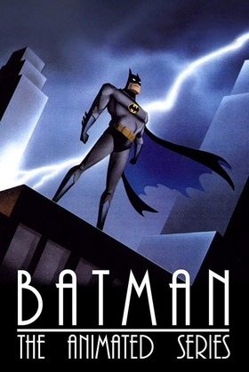
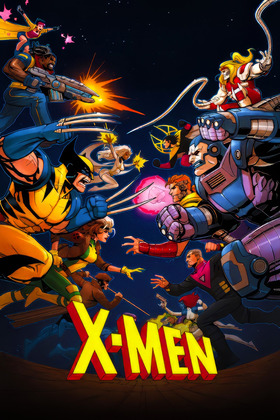
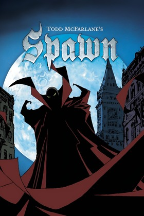
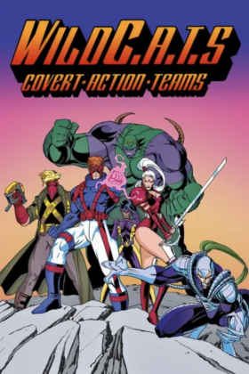
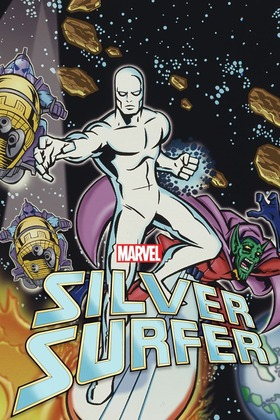
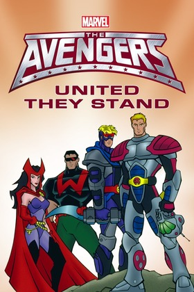

Fox Kids
Batman: The Animated Series
1992-1995 · 2 seasons · 85 episodes
- Legacy 96
- Action 88
- Cult 95
Gotham noir, prestige animation, definitive iconography.
Comic card collection
A new product direction for Wizard: less streaming shelf, more collectible archive. Browse the era as if every series were a prized card in a curated comic shop binder.
Featured pull
Showing all featured cards.

Fox Kids
1992-1995 · 2 seasons · 85 episodes
Gotham noir, prestige animation, definitive iconography.

Fox Kids
1992-1997 · 5 seasons · 76 episodes
Serialized stakes, mutant drama and prime crossover appeal.

Fox Kids
1994-1998 · 5 seasons · 65 episodes
Big rogues gallery energy with maximum familiarity.
Kids' WB
1996-2000 · 4 seasons · 54 episodes
Bright mythmaking with a cleaner heroic silhouette.

HBO
1997 · 3 seasons · 18 episodes
Adult animation prestige with grim, high-contrast energy.

USA Network
1994 · 1 season · 13 episodes
Image-era curiosity with prime specialist appeal.

Fox Kids
1998 · 1 season · 13 episodes
Cosmic art direction that instantly breaks the pattern.

Fox Kids
1999 · 1 season · 13 episodes
Rare-find value with strong completionist appeal.
Comparison table
Select up to two cards to compare.
Choose a card with the Compare button.
Choose a second card to complete the face-off.
Collector notes
The page now reads like a collectible archive instead of a streaming clone. That shift makes the brand more memorable and gives the 90's section a specific point of view.
Deck saving and comparison are not decorative labels. They now support actual interaction, which keeps the UI from overpromising.
Every card still surfaces year, season and episode metadata so the visual system does not bury functional information.